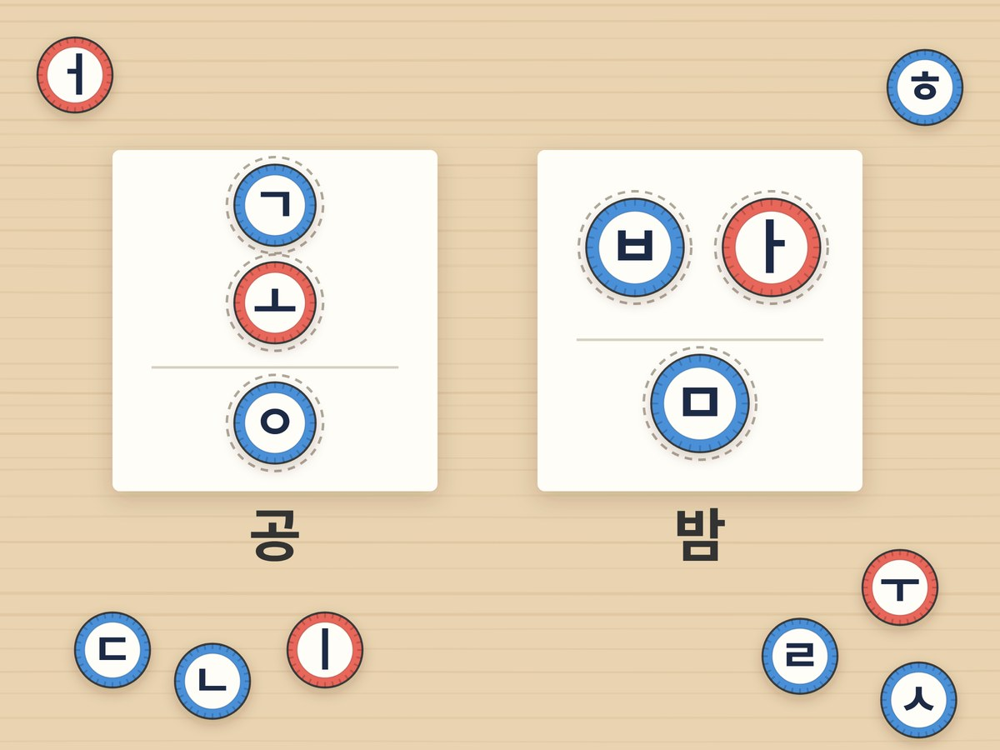

병뚜껑 받침 글자 블록

병뚜껑에 자음과 모음을 붙여 글자 블록을 만들어요. '바'에 받침을 바꿔 끼우며 밤, 반, 밥, 발을 만들고 받아쓰기 놀이까지 해요.
30분 · 난이도 ★★☆ 보통
준비물
- 병뚜껑 30개 — 페트병 뚜껑. 자음용과 모음용으로 색을 나누면 더 쉬워요.
- 글자 스티커 도안 — 도안의 동그라미를 오려 뚜껑에 붙여요. 네임펜으로 직접 써도 돼요.
- 글자 판·받아쓰기 기록지 — 같은 도안 둘째 장에 있어요
- 가위, 풀, 연필 — 스티커 붙이기와 받아쓰기용
하는 방법
- 글자 블록 만들기
자음은 파란 동그라미, 모음은 빨간 동그라미를 오려 병뚜껑 위에 붙여요. 받침에 자주 쓰는 ㄱ ㄴ ㄹ ㅁ ㅂ ㅇ은 하나씩 더 만들어요. - 받침 없는 글자 만들기
글자 판에 첫소리와 모음을 놓아요. ㄱ 아래에 ㅗ를 놓으면 '고', ㅂ 옆에 ㅏ를 놓으면 '바'예요. ㅗ처럼 누운 모음은 아래에, ㅏ처럼 선 모음은 오른쪽에 놓아요. - 받침 붙이기
글자 아래 받침 자리에 자음을 하나 더 놓아요. '고' 아래에 ㅇ을 놓으면 '공', '바' 아래에 ㅁ을 놓으면 '밤'이 돼요. 소리 내어 읽으며 입 모양이 어떻게 끝나는지 느껴 봐요. - 받침 바꿔 보기
'바'는 그대로 두고 받침만 바꿔요. ㅁ이면 밤, ㄴ이면 반, ㅂ이면 밥, ㄹ이면 발이에요. 받침 하나로 뜻이 완전히 달라져요. - 병뚜껑 받아쓰기
부모님이 낱말을 불러 주면 아이가 병뚜껑으로 먼저 만들고, 기록지에 연필로 써요. 맞으면 크게 표시해 줘요. 한 번에 5개면 충분해요.
생각해 봐요
- '공'에서 받침 ㅇ을 빼면 어떤 글자가 되나요?
- '달'의 받침을 ㄴ으로 바꾸면 어떤 낱말이 될까요?
- '옷'은 [옫]으로 소리 나는데, 왜 ㅅ 받침으로 쓸까요? '옷이'를 소리 내어 읽어 봐요.
개념 정리
글자 아래에 붙는 자음을 받침이라고 해요. '바'에 ㅁ 받침을 붙이면 입술을 꾹 다물며 '밤'이 되고, ㄴ을 붙이면 혀끝이 입천장에 닿으며 '반'이 돼요. 받침 하나만 바꿔도 전혀 다른 낱말이 되니까, 끝소리를 귀 기울여 들어야 해요.